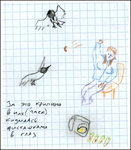
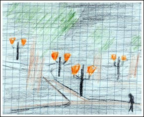

Волшебный город. Отьезд. Шкурки от фисташек. Жёлтые фонари ожидания.
Я сидел на берегу моря и наслаждался солёным воздухом. Невдалеке прошёл паром, а немногим позже до берега докатились волны, им созданные. Первая, вторая.. — я начал их считать. — Третья, четвёртая.. Совершенно неожиданно, седьмая волна накрыла аппаратуру, обувь, да и меня самого.
Разложив вещи на просушку, я полез в паспорт с надеждой, что это моя седьмая поездка. Тем самым у меня получилось бы замечательное, хитро связанное вступление к данному рассказу — мол, седмая волна и седьмая поездка. И нифига!
По штампам в паспорте, это была моя юбилейная десятая поездка в Таллинн.
Таллинн волшебный город. Что бы мне про него мне не говорили, что бы я сам не увидел со временем, он навсегда останется волшебным для меня лично. Там живут волшебные существа и сказочные звери, а все стены и улицы города посыпаны волшебным порошком из морского воздуха. Там исполняются желания и сбываются мечты. Вылечиваются болезни и всегда повышается настроение.
Конечно же, чтобы увидеть это волшебство надо постараться найти. Оно скрыто от случайных глаз, чтобы в город не нахлынули толпы любителей лёгкой наживы. А я вот, умею видеть это спрятанное волшебство города. Потому и люблю Таллинн. Потому и приезжаю туда как можно чаще...
Как то раз у меня в Риге, в течение сложного месяца накопилось много нехорошего: стресс от работы, какая-то непонятная депрессия, тотальная усталось от жизни и прочее. А от такого диагноза я лично знаю только два рецепта — застрелиться или съездить в Таллинн. Выбрал последнее, о чём и не пожалел.
Ещё перед отъездом рассказывал друзьям, что этот город меня спасёт. И друзья вполне разумно замечали, что надуманное мною может не совпасть с реальным положением вещей. Но либо мы сами создаём себе счастливый мир, либо мы не будем жить совсем никак. А поскольку я в отличном настроении пишу этот текст на следующий день после возвращения, то вот оно и доказательство удачной поездки.
Кстати о «перед отъездом рассказывал друзьям». Уезжал я во вторник — рабочий день — в три часа ночи. То есть промежуток после работы и до автобуса можно было и нужно было чем то заполнить. Желательно, причём, милыми девушками и хорошими друзьями.
Девушки, правда, оказались милыми лишь ко мне. Вот к чайкам на рижской набережной, например, они были весьма враждебны — швырялись шкурками от фисташек, целясь в глаза.
Чайки успешно издевались над Кристиной,
над которой ещё успешнее издевались батарейки от камеры.

Уже ночью, в ожидании автобуса, мы выпили с Вороном по кружечке пива, скрашивая время разговорами о жизни. Там в Риге, в парках старого города зажглись фонари. Жёлтые фонари ожидания. Ожидания Таллинна, моих эстонских друзей, автобуса, в котором я сразу заснул. У меня был тяжёлый день, тяжёлая неделя. Я заснул и хотел проснуться в Таллинне...

Из дорожного дневника:
У меня есть орешки, штатив, две плёнки. У меня всё есть с собой, я готов ко всему, что может случится.
И даже больше — я хочу, чтобы что-то случилось. Чтобы было что-то интересное.